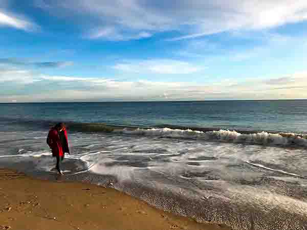
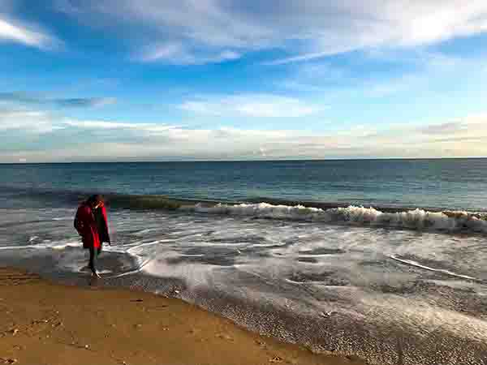

PORTFOLIO
This is the section where I open my heart to you; every photographer takes a million pictures, and only a few make the cut to be shown.
I keep on changing my mind, an going through stages where I tend to do more black and white, or maybe shoot more in the afternoon. At the end of the day this is the part where you can see the world how I see it, and I hope you enjoy it.


 



DIGITAL MANIPULATION
While the tenencies of the world change, I am welcoming some changes within my own habillities.
I have been working on photographic manipulations, which basically involves common photography and digital designed assests to create an ilusion or a piece of art.
I hope you like them.